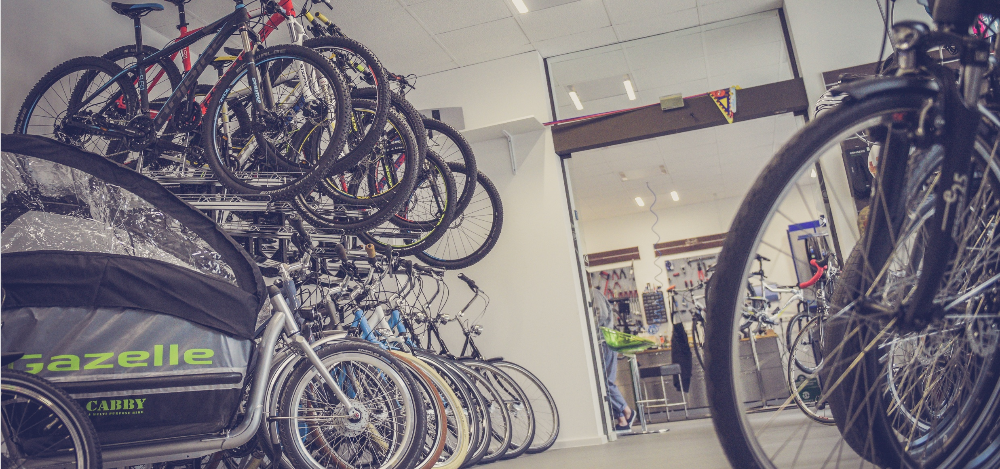

<div id="single-portfolio">
	<div id="portfolio-details" class="container">
		<a class="close-folio-item" href="#"><i class="fa fa-times"></i></a>
		
		<div class="row">
			<div class="col-sm-9">
				<div class="project-info">
					<h3>Who has time for peace anymore?</h3>
					<p>Jeremy Seedman, owner, of Ready, Set, Bike (a bicycle maintenance shop) approached us with a deadline: He was launching his business in two short weeks and his previous designer/developer fell through. He needed results and he needed them fast.</p>
					<p>We agreed to meet his deadline and got to work immediately. He just need the site's layout to be finished, and he needed the site developed. We produced the final mockups within four days and passed the approved designs onto our developer team. </p>
                    <p>Two days shy of two weeks, we presented the developed product. Jeremy was thrilled with the results, and says people walk in every day that found him through his site.</p>
				</div>
			</div>
			<div class="col-sm-3">
				<div class="project-details">
					<h3>Project Details</h3>
					<p><span>Client: </span>Ready, Set, Bike!</p>
					<p><span>Date:</span> 15 August 2016</p>
					<p><span>Tag:</span> Rapid Design and Development</p>
				</div>  
			</div>
		</div>
	</div>
</div>